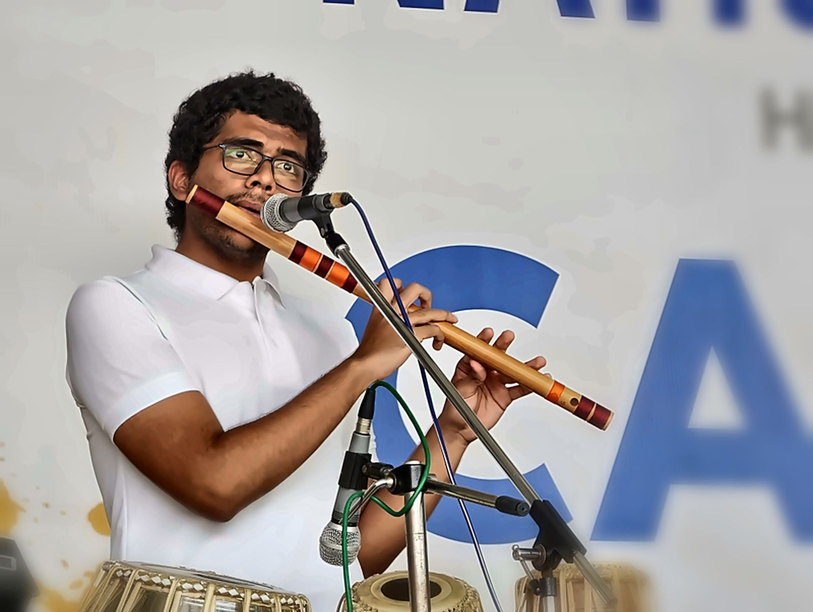
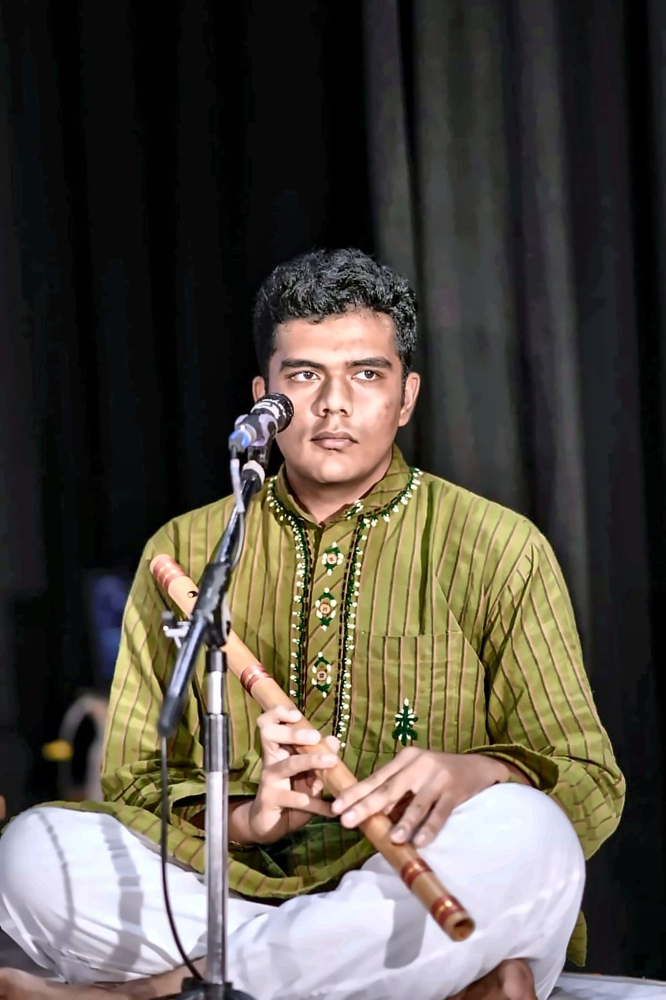
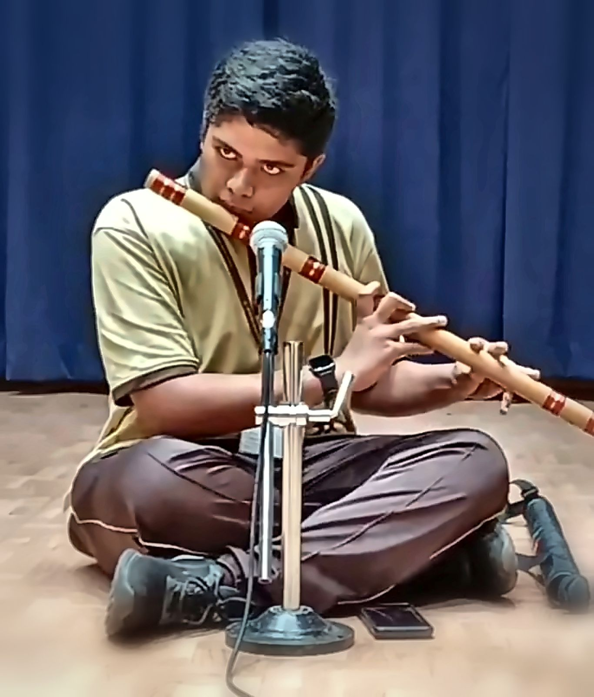
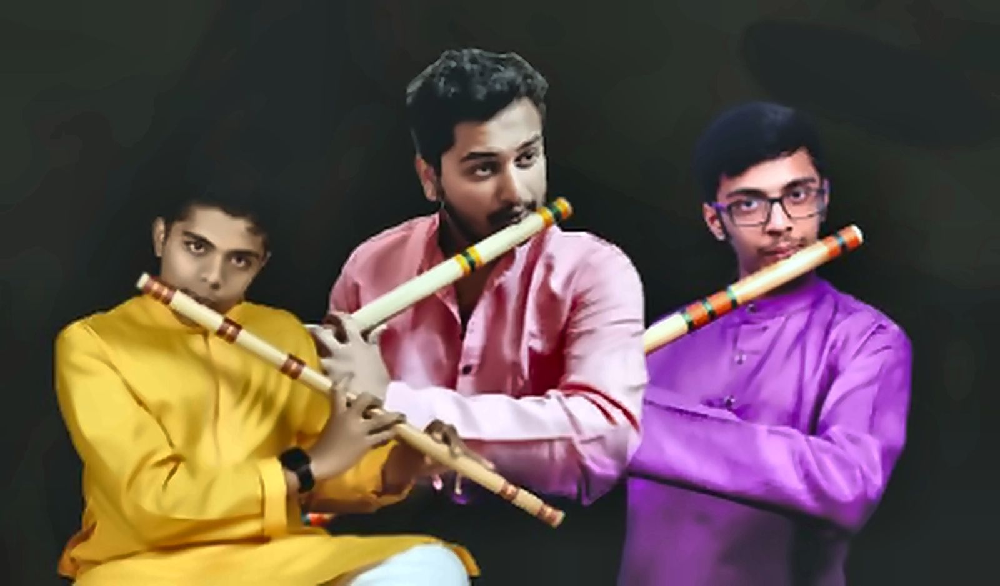
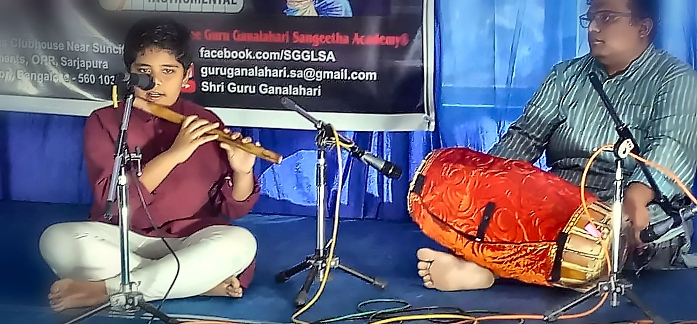

On stage
Solo voice, supporting role
I remain committed to regular practice and performance in both Carnatic and Hindustani music. Performing regularly has taught me stage presence, focus, and how to connect with an audience, whether in a school auditorium, at a community concert or on an outdoor stage.
AS A SOLOIST
Presenting ragas and compositions as the lead voice, shaping the performance from the opening phrases to the final flourish.
AS AN ACCOMPANIST
Supporting vocalists and fellow musicians across a variety of styles, listening closely and responding within the music rather than over it.
ON TELEVISION & FESTIVAL PROGRAMMES
Sri Thyagaraja and Sri Purandaradasaru Aradhana, telecast on Ayush TV (February 2025), and Bhakti Manjari concerts for Sri Rama Navami, Ganesha and Krishna festivals (2025).
Watch the programmesGallery
Moments from the stage






